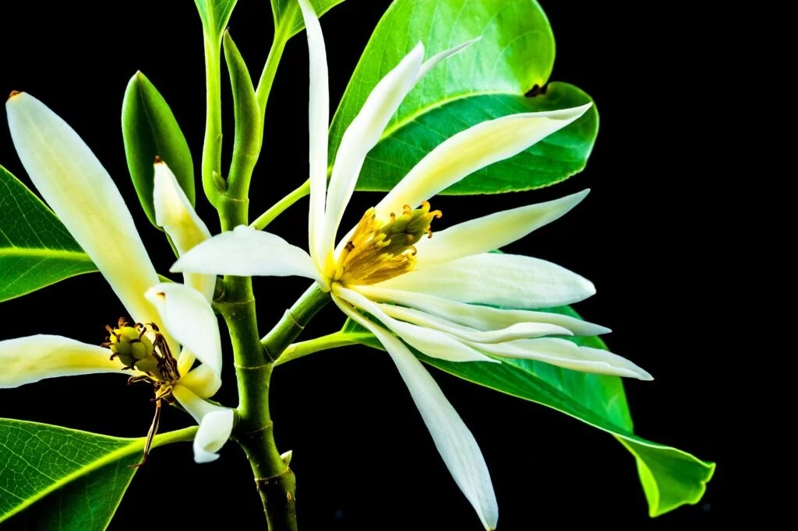

Musik

Bungong Jeumpa, Keindahan bagi Masyarakat Aceh
Bagi sebagian orang jika mendengar bungong jeumpa mungkin hanya sebatas lagu daerah. Namun lebih dari itu, bungong jeumpa bagi kebudayaan aceh melambangkan semangat...